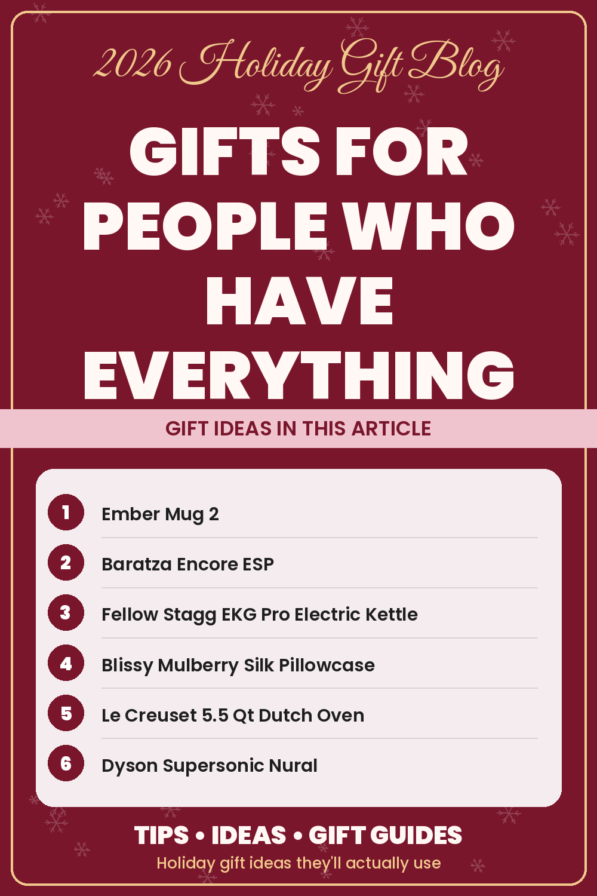

Gifts for People Who Have Everything

Everyone has at least one person on their list who's impossible to shop for. They buy what they want when they want it, they have opinions about brands, and if you ask what they'd like, the answer is always "nothing, really." Buying for them can feel like a test you're destined to fail.
It isn't. People who have everything still love gifts; they just don't need more stuff. The secret is to stop hunting for something they lack and start looking for one of five things: an upgrade, a luxury they won't buy themselves, a consumable, a memory, or something genuinely new.
Strategy 1: Upgrade something they use every day
The person who has everything still has a coffee mug, a pillow and a hair dryer. They just might not have the best version. Upgrading a daily object is a gift they'll notice every morning.
- The coffee drinker: the Ember Mug 2, from our gifts for mom guide, is designed to keep a drink at their preferred temperature. Serious coffee fans might appreciate a grinder like the Baratza Encore ESP or the Fellow Stagg EKG Pro Electric Kettle from our coffee lover gifts guide.
- The sleeper: a Blissy Mulberry Silk Pillowcase is a small upgrade with a luxurious feel.
- The cook: a Le Creuset 5.5 Qt Dutch Oven is the kind of heirloom piece people often hesitate to buy for themselves.
- The beauty lover: a premium tool like the Dyson Supersonic Nural upgrades a daily routine. See our article on beauty gift ideas she'll actually use for more.
Strategy 2: Give the luxury they won't buy themselves
Many well-off, practical people still draw a line at buying certain things for themselves. Those are perfect gifts. Think of a Barefoot Dreams CozyChic Throw or CozyChic Robe, a Theragun Mini for sore muscles, or an UGG Tasman II Slipper. None of these are things they need, which is exactly why they're a treat.
Our luxury gifts for her guide is full of these, from designer bags to signature fragrance, and our self-care and spa gifts guide covers the cozier side of indulgence.
Strategy 3: Choose something that gets used up
Consumable gifts are a favorite for people with full homes because they don't add clutter. Once they're enjoyed, they're gone, leaving only the memory.
- Treats: a box like the Ferrero Collection Chocolate Gift Box never goes to waste.
- Pampering: a Vanilla Coconut Spa Gift Basket or a set of handmade bath bombs.
- Hobby projects: for the home bartender, a DO YOUR GIN DIY Gin Making Kit from our home bar gifts guide turns into an evening activity and a homemade bottle.
- Beauty favorites: a skincare staple like CeraVe Moisturizing Cream or a LANEIGE Water Sleeping Mask gets used up, and appreciated, all winter.
Strategy 4: Give a memory
For people who truly need nothing, sentimental gifts often land the hardest. A digital photo frame like the Aura Carver HD or the Frameo 10.1" WiFi Frame lets the whole family send photos to their living room. Load it with pictures before you wrap it, and it becomes one of the most personal gifts they'll receive.
A scrapbook like Our Adventure Book, from our gifts for grandparents guide, is another great option. Fill the first few pages with photos and notes, and leave the rest for future memories.
Strategy 5: Find something genuinely new
Sometimes the answer is a clever gadget they haven't heard of yet. Our cool tech gadgets guide is a great hunting ground:
- The Birdbuddy Pro Solar Smart Bird Feeder is designed to capture visiting birds on camera, a novel gift for anyone with a yard.
- Ray-Ban Meta (Gen 2) Smart Glasses blend classic frames with tech features.
- An XGIMI MoGo 2 Pro Mini Projector turns any wall into a movie night.
- The LEGO Botanicals Flower Bouquet is a relaxing build that ends as a display piece.
- An Aarke Carbonator 3 makes sparkling water at home and looks good doing it.
A few rules that always help
- Listen for complaints. "My coffee always gets cold" or "I never sleep well in hotels" are gift ideas in disguise.
- Go for quality over quantity. One excellent item beats a basket of filler.
- Avoid hyper-personal items like clothing sizes or specific fragrances unless you're confident about their taste.
- Include a gift receipt. People with strong preferences appreciate the option to swap.
- Add a personal touch. A handwritten note explaining why you chose it makes any gift feel considered.
Ideas by person
- For dad: a MEATER Pro Smart Meat Thermometer for the grill master, or browse our gifts for dad guide.
- For mom: the Hatch Restore 3 Sunrise Alarm or an Ember Mug from our gifts for mom guide.
- For grandparents: a pre-loaded photo frame or a Kindle from our gifts for grandparents guide.
- For your partner: a splurge from luxury gifts for her or big-ticket tech.
The bottom line
The person who has everything doesn't need more things. They need something better, something indulgent, something that disappears, something meaningful or something surprising. Pick a strategy, add a personal note, and you'll be the one who finally got it right. Browse more ideas in the For Her and For Him categories.
As an Amazon Associate I earn from qualifying purchases. Links to Amazon on this page are affiliate links; prices and availability change often, so check Amazon for current details.